Mediu de învățare
Indicatoare de Orientare
Indicatoarele de orientare au forma poligonală, în majoritatea cazurilor pe fond albastru, pe care sunt desenate sau sunt înscrise, cu caractere de culoare albă, informații referitoare la direcția ce trebuie urmatã pentru a se ajunge la destinația dorită ori la diferitele utilități publice de care pot beneficia participanții la trafic pe traseul pe care urmează să-l parcurgă.
Presemnalizarea traseului de urmat in vederea efectuarii virajului la stanga

Curs de apa, viaduct
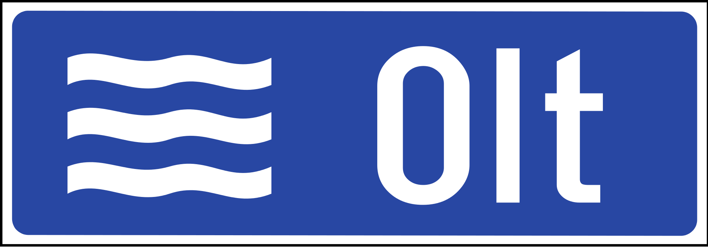Simbolul si numarul autostrazii

Banda destinata circulatiei vehiculelor lente

Presemnalizarea directiilor intr-o intersectie cu sens giratoriu/p>

Presemnalizarea directiilor indicate

Confirmarea directiei de mers spre localitatile mai importante
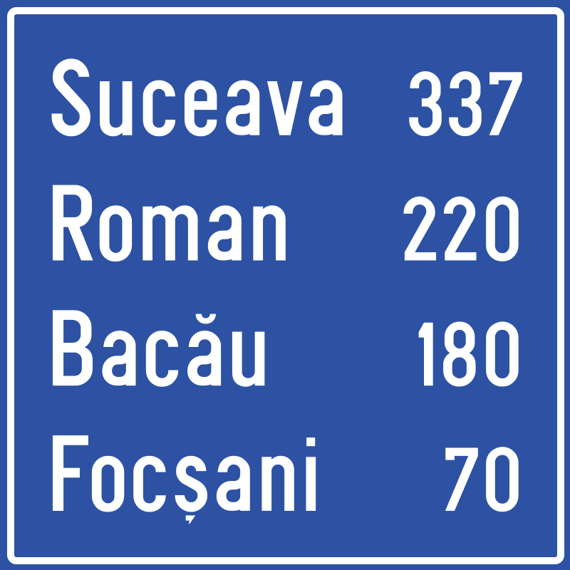Drum comunal
Drum inchis sau deschis circulatiei publice
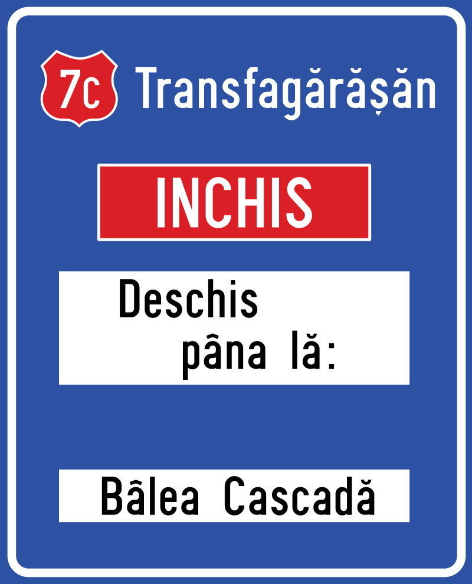Drum Judetean

Drum national

Drum fara iesire
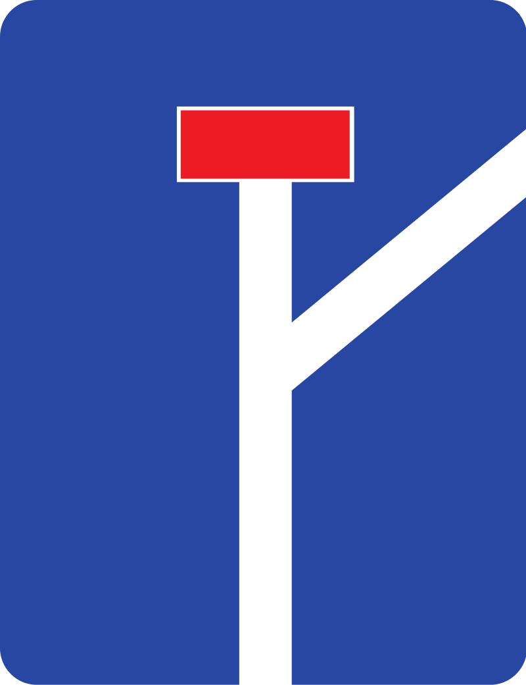Iesire din localitate

Presemnalizarea directiilor la o intersectie de drumuri
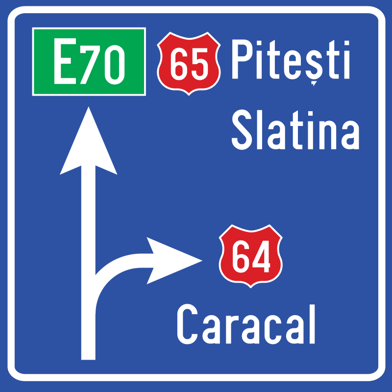Limita de judet

Intrare in localitate
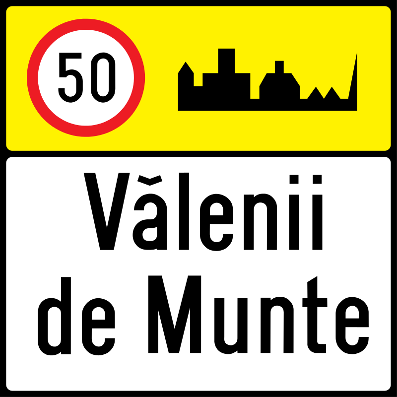Directia spre aeroport

Directia spre autostrada
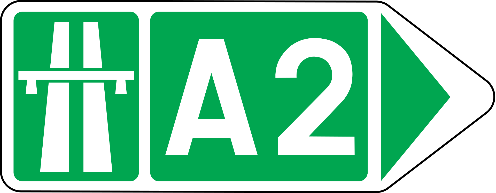Directia spre localitatile indicate
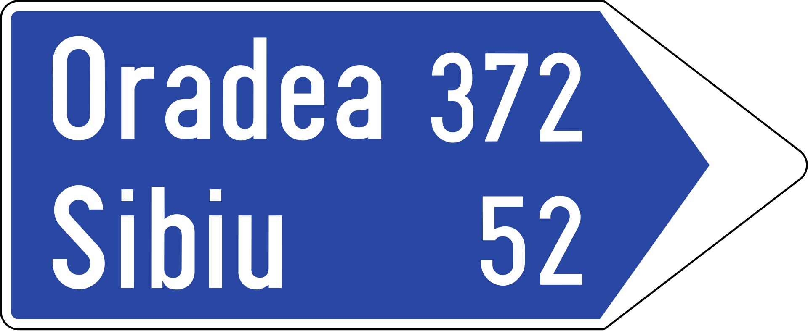Directia spre obiectivul turistic
Terminarea benzii de circulatie
Telefon de urgenta
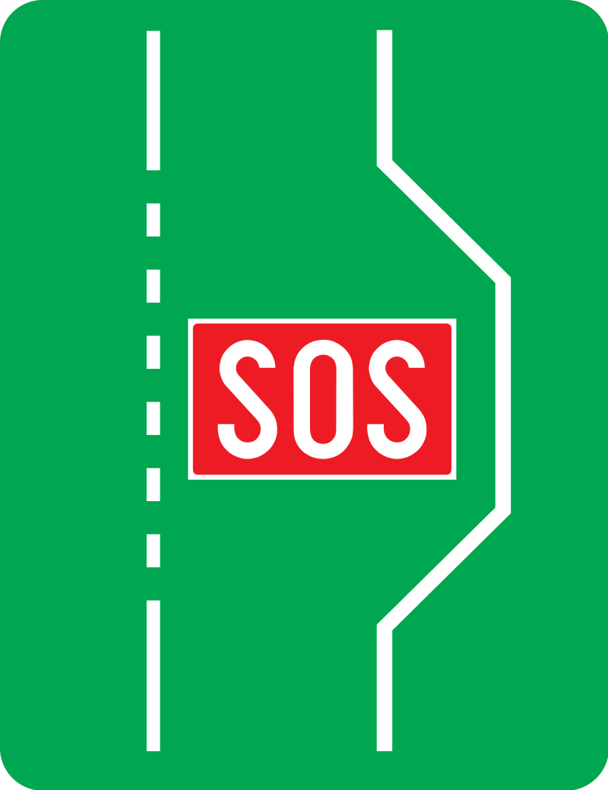Drum deschis traficului international
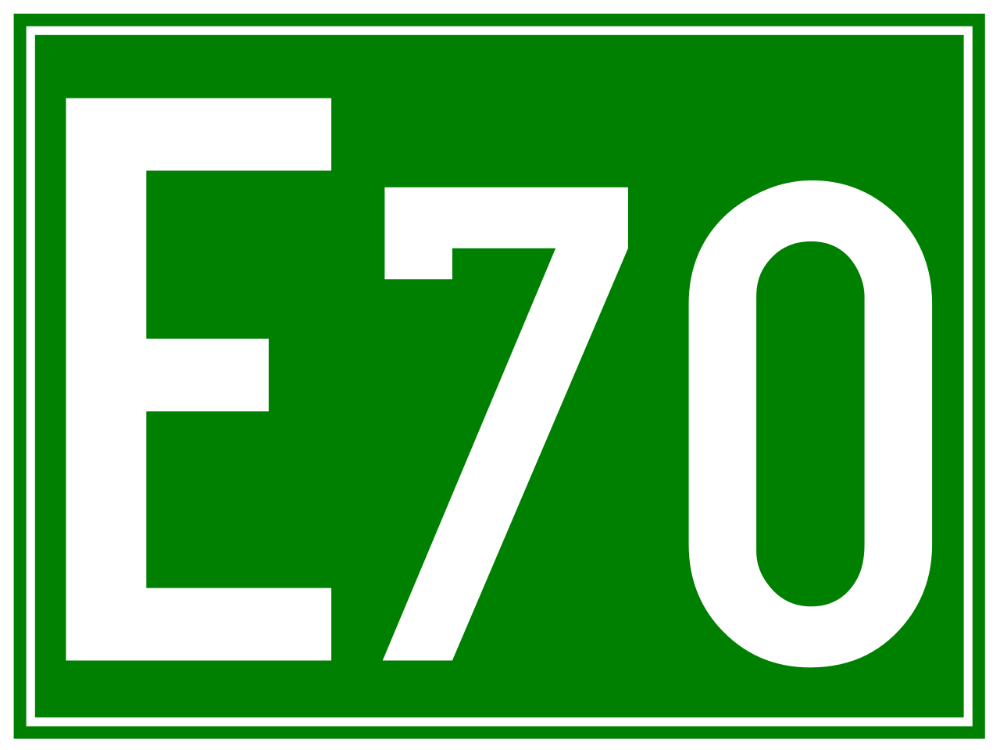Presemnalizarea traseului de evitare a localitatii

Selectarea circulatiei pe directii de mers in apropierea intersectiei
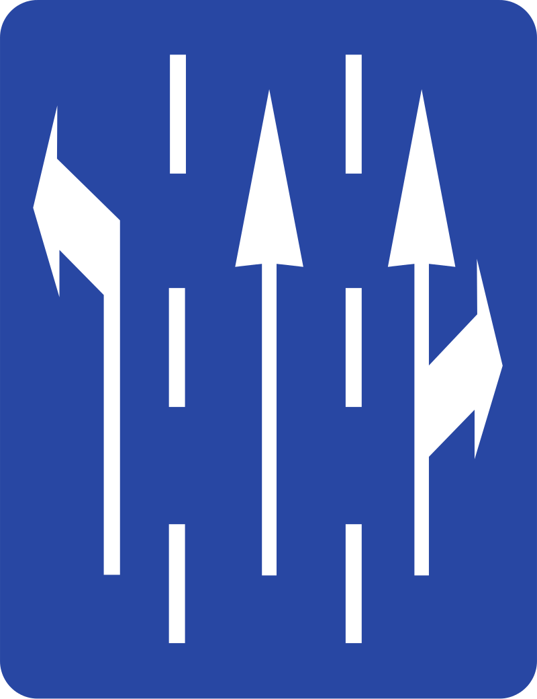